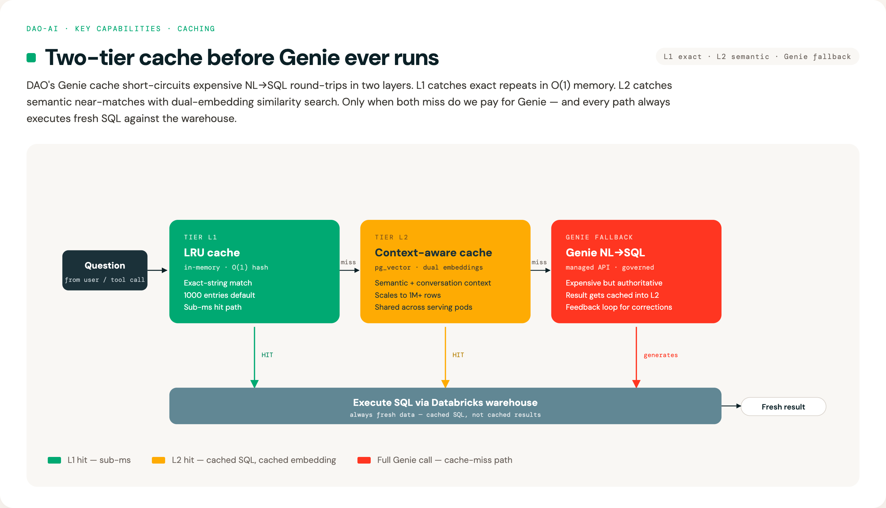
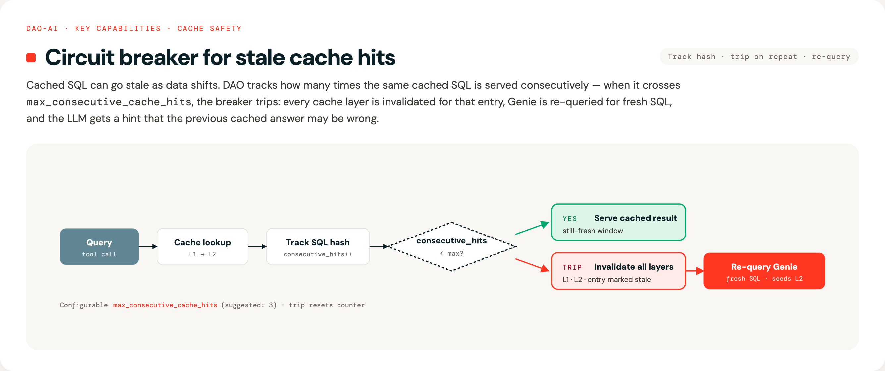
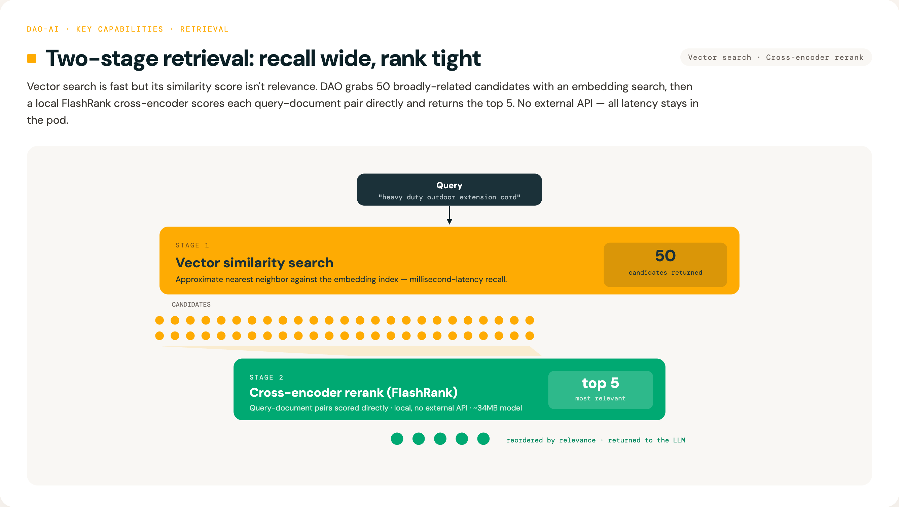
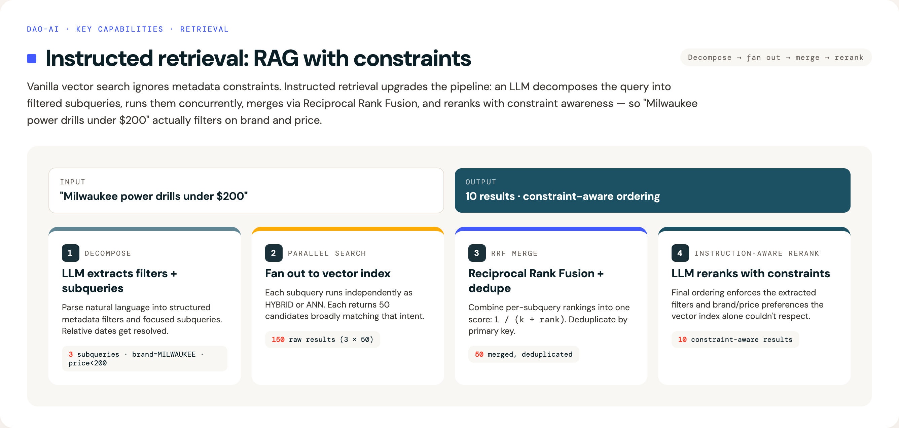
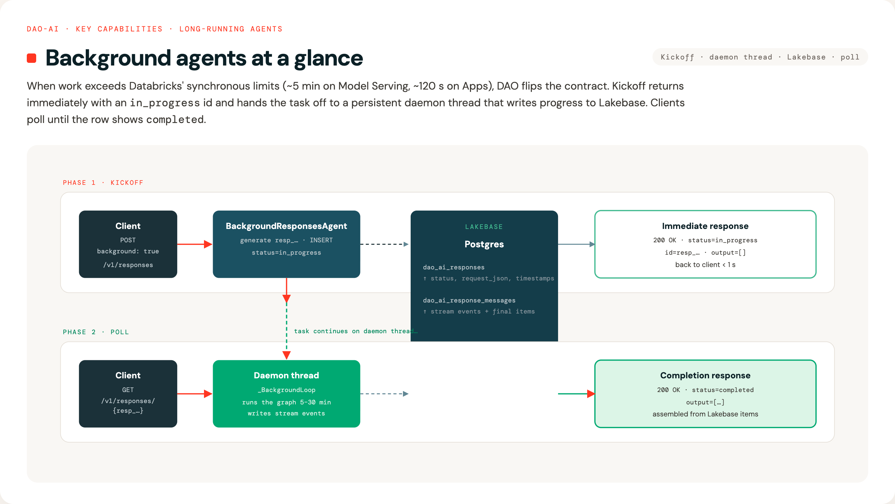

Key Capabilities¶

These are the powerful features that make DAO production-ready. Don't worry if some seem complex — you can start simple and add these capabilities as you need them.
1. Dual Deployment Targets¶
What is this? DAO agents can be deployed to either Databricks Model Serving or Databricks Apps using the same configuration, giving you flexibility in how you expose your agent.
Why this matters: - Model Serving: Traditional endpoint for inference workloads, autoscaling, pay-per-token pricing - Databricks Apps: Full web applications with custom UI, background jobs, and richer integrations - Single Configuration: Switch deployment targets with one line change — no code rewrite needed - Environment Consistency: Same YAML config works in both environments
Comparison:
| Feature | Model Serving | Databricks Apps |
|---|---|---|
| Use Case | Inference API endpoint | Full web application |
| Scaling | Auto-scales based on load | Manual scaling configuration |
| UI | API only | Custom web UI possible |
| Pricing | Pay per token/request | Compute-based |
| Deployment Speed | ~2-5 minutes | ~2-5 minutes |
| Best For | API integrations, high throughput | Interactive apps, custom UX |
How to configure:
app:
name: my_agent
# Serving mode is chosen at deploy time via --mode (default: apps)
# Model Serving specific options (used when deploying with --mode model_serving)
endpoint_name: my_agent_endpoint
workload_size: Small
scale_to_zero: true
agents:
- *my_agent
Deploy to Model Serving:
Deploy to Databricks Apps:
CLI override: The --mode flag selects the serving target at deploy time (default: apps).
Behind the scenes: - Model Serving deployments create an MLflow model and serving endpoint - Apps deployments create a Databricks App with MLflow experiment tracking - Both share the same agent code, tools, and orchestration logic - Environment variables and secrets are automatically configured for each platform
2. Multi-Tool Support¶
What are tools? Tools are actions an agent can perform — like querying a database, calling an API, or running custom code.
DAO supports several first-class tool types plus an escape hatch for arbitrary factory functions:
| Tool Type | Use Case | Example |
|---|---|---|
| Genie | Natural-language SQL via a Genie space, with optional caching | type: genie + genie_room: *room |
| AI Search | Semantic / hybrid search over a Databricks AI Search index (formerly Vector Search), with optional instructed retrieval | type: ai_search (or legacy vector_search) + retriever: *retriever |
| Lakebase Search | ANN / BM25 / hybrid (RRF) retrieval over a Databricks Lakebase Postgres table using the lakebase_vector and lakebase_text extensions |
type: lakebase_search + vector_store: *store (or retriever: *retriever) |
| SQL | Run a fixed, optionally parameterized SQL statement against a SQL warehouse or a Lakebase / Postgres database | type: sql + warehouse: *wh (or database: *db) + statement: |
| Search | Web search (DuckDuckGo) | type: search |
| Unity Catalog | Governed SQL functions | type: unity_catalog + resource: *fn |
| MCP | External services via Model Context Protocol | type: mcp + connection: *mcp_conn |
| Python | Custom business logic — direct function import | type: python + name: my_pkg.my_tool |
| Inline | Quick prototyping — define tool code directly in YAML | type: inline + code: |
| Factory | Escape hatch for arbitrary factory functions not yet first-class | type: factory + name: dao_ai.tools.<factory> |
tools:
# Genie - first-class, no factory boilerplate
sales_genie:
name: sales_genie
function:
type: genie
genie_room: *sales_genie_room
name: query_sales
description: "Query sales analytics by region, product, time period."
# Add caching → tool becomes a toolkit (query + feedback) automatically
lru_cache:
warehouse: *shared_warehouse
capacity: 100
time_to_live_seconds: 3600
# AI Search (formerly Vector Search) - first-class, supports instructed retriever
product_search:
name: product_search
function:
type: ai_search # legacy alias: vector_search
retriever: *products_retriever # or: vector_store: *products_vs
name: product_search
description: "Search the product catalog by description / brand / category."
# Web Search (DuckDuckGo) - zero config
web_search:
name: web_search
function:
type: search
# Unity Catalog - governed SQL function
sku_lookup:
name: find_product_by_sku
function:
type: unity_catalog
resource: *find_product_by_sku
# SQL - fixed, parameterized statement against a warehouse or Lakebase DB.
# LLM-sourced params appear in the tool schema (:name for warehouse,
# %(name)s for Lakebase); context-sourced params bind from runtime Context.
category_inventory:
name: category_inventory
function:
type: sql
database: *retail_database # or: warehouse: *shared_warehouse
statement: |
SELECT product_name, on_hand FROM inventory
WHERE store_num = %(store_num)s AND category = %(category)s
description: "On-hand inventory for a category at the current store."
params:
- name: category # LLM supplies this (source defaults to llm)
type: string
description: "Product category to filter by."
- name: store_num # bound from Context, hidden from the model
source: context
type: int
# MCP - external service integration
github_mcp:
name: github
function:
type: mcp
transport: streamable_http
connection: *github_connection
# Python - direct import
time_tool:
name: current_time
function:
type: python
name: dao_ai.tools.current_time_tool
# Inline - define tool code directly in YAML (great for prototyping)
calculator:
name: calculator
function:
type: inline
code: |
from langchain.tools import tool
@tool
def calculator(expression: str) -> str:
"""Evaluate a mathematical expression."""
return str(eval(expression))
# First-class — call a Model Serving endpoint as a tool
specialist_agent:
name: specialist
function:
type: serving_endpoint
endpoint: *external_agent_endpoint
description: "Delegate to external specialist agent"
# Factory — escape hatch for any custom factory function
custom_factory_tool:
name: custom
function:
type: factory
name: my_package.factories.create_custom_tool
args:
my_arg: value
Migrating from type: factory to first-class types¶
The old type: factory + name: dao_ai.tools.create_* shape continues to work indefinitely — no deprecation. If you're starting fresh, prefer the first-class types below for the most common cases:
| Old shape (still works) | New shape |
|---|---|
type: factory, name: dao_ai.tools.create_genie_tool, args: { genie_room: ..., lru_cache_parameters: ... } |
type: genie, genie_room: ..., lru_cache: ... |
type: factory, name: dao_ai.tools.create_genie_toolkit, args: { genie_room: ..., lru_cache_parameters: ..., context_aware_cache_parameters: ... } |
type: genie, genie_room: ..., lru_cache: ..., context_aware_cache: ... (any cache promotes to toolkit) |
type: factory, name: dao_ai.tools.create_ai_search_tool, args: { retriever: ... } |
type: ai_search, retriever: ... |
type: factory, name: dao_ai.tools.create_search_tool |
type: search |
type: factory, name: dao_ai.tools.sql.create_execute_statement_tool, args: { warehouse: ..., statement: ... } |
type: sql, warehouse: ... (or database: ...), statement: ..., optional params: ... |
type: factory, name: dao_ai.tools.create_agent_endpoint_tool, args: { llm: <endpoint>, ... } |
type: serving_endpoint, endpoint: <name-or-model> (FMAPI + UC ResponsesAgent endpoints; lazy task discovery) |
type: factory, name: dao_ai.tools.create_responses_agent_tool / create_chat_completions_agent_tool, args: { app: ..., ... } |
type: app, app: <app> (lazy /agent/info discovery; set api: to skip) |
| (no factory equivalent — A2A is first-class only, since v0.1.80) | type: a2a, agent_card_url: ... |
Cache parameter field renames on type: genie:
- lru_cache_parameters → lru_cache
- context_aware_cache_parameters → context_aware_cache
- in_memory_context_aware_cache_parameters → in_memory_context_aware_cache
3. On-Behalf-Of User Support¶
What is this? Many Databricks resources (like SQL warehouses, Genie spaces, and LLMs) can operate "on behalf of" the end user, using their permissions instead of the agent's service account credentials.
Why this matters: - Security: Users can only access data they're authorized to see - Compliance: Audit logs show the actual user who made the request, not a service account - Governance: Unity Catalog permissions are enforced at the user level - Flexibility: No need to grant broad permissions to a service account
How it works: When on_behalf_of_user: true is set, the resource inherits the calling user's identity and permissions from the API request.
Supported resources:
resources:
# Models - use caller's permissions for model access
models:
claude: &claude
name: databricks-claude-3-7-sonnet
on_behalf_of_user: true # Inherits caller's model access
# Warehouses - execute SQL as the calling user
# Provide warehouse_id directly, or just name to resolve the ID automatically
warehouses:
analytics: &analytics_warehouse
warehouse_id: abc123def456 # or omit and use name instead
on_behalf_of_user: true # Queries run with user's data permissions
# Genie - natural language queries with user's context
# Provide space_id directly, or just name to resolve the ID automatically
genie_rooms:
sales_genie: &sales_genie
space_id: xyz789 # or omit and use name instead
on_behalf_of_user: true # Genie uses caller's data access
Real-world example:
Your agent helps employees query HR data. With on_behalf_of_user: true:
- Managers can see their team's salary data
- Individual contributors can only see their own data
- HR admins can see all data
The same agent code enforces different permissions for each user automatically.
Important notes: - The calling application must pass the user's identity in the API request - The user must have the necessary permissions on the underlying resources - Not all Databricks resources support on-behalf-of functionality
4. Advanced Caching (Genie Queries)¶
Why caching matters: When users ask similar questions repeatedly, you don't want to pay for the same AI processing over and over. Caching stores results so you can reuse them.
What makes DAO's caching special: Instead of just storing old answers (which become stale), DAO stores the SQL query that Genie generated. When a similar question comes in, DAO re-runs the SQL to get fresh data without calling the expensive Genie API again.
💰 Cost savings: If users frequently ask "What's our inventory?", the first query costs $X (Genie API call). Subsequent similar queries cost only pennies (just running SQL).
DAO provides two-tier caching for Genie natural language queries, dramatically reducing costs and latency. Configure on the first-class type: genie tool — adding any cache automatically promotes the tool to a toolkit (query + feedback).
genie_tool:
name: sales_genie
function:
type: genie
genie_room: *retail_genie_room
name: query_sales
description: "Query sales analytics by region, product, time period."
# L1: Fast O(1) exact match lookup
lru_cache:
warehouse: *warehouse
capacity: 1000 # Max cached queries (default: 1000)
time_to_live_seconds: 86400 # 1 day (default), use -1 or None for never expire
# L2: Context-aware similarity search via pg_vector (cosine similarity)
context_aware_cache:
database: *postgres_db
warehouse: *warehouse
embedding_model: *embedding_model # Default: databricks-gte-large-en
similarity_threshold: 0.85 # 0.0-1.0 (default: 0.85), higher = stricter
time_to_live_seconds: 86400 # 1 day (default), use -1 or None for never expire
table_name: genie_context_aware_cache # Optional, default: genie_context_aware_cache
# IVFFlat index tuning (auto-computed by default, scales to 1M+ rows)
# ivfflat_lists: null # Auto: max(100, sqrt(row_count))
# ivfflat_probes: null # Auto: max(10, sqrt(lists))
# ivfflat_candidates: 20 # Top-K for Python reranking
Cache Architecture¶

LRU Cache (L1)¶
The LRU (Least Recently Used) Cache provides instant lookups for exact question matches:
| Parameter | Default | Description |
|---|---|---|
capacity |
1000 | Maximum number of cached queries |
time_to_live_seconds |
86400 | Cache entry lifetime (-1 = never expire) |
warehouse |
Required | Databricks warehouse for SQL execution |
Best for: Repeated exact queries, chatbot interactions, dashboard refreshes
Context-Aware Cache (L2)¶
The Context-Aware Cache finds similar questions even when worded differently using vector embeddings and similarity search. It includes conversation context awareness to improve matching in multi-turn conversations. DAO provides two implementations:
PostgreSQL-Based Context-Aware Cache¶
Uses PostgreSQL with pg_vector for persistent, multi-instance shared caching. Similarity search uses cosine similarity with a two-phase approach: an IVFFlat index-optimized scan retrieves top-K candidates by question distance, then Python-side reranking applies combined similarity, threshold checks, and bidirectional context-skip logic.
| Parameter | Default | Description |
|---|---|---|
similarity_threshold |
0.85 | Minimum cosine similarity for cache hit (0.0-1.0) |
time_to_live_seconds |
86400 | Cache entry lifetime (-1 = never expire) |
embedding_model |
databricks-gte-large-en |
Model for generating question embeddings |
database |
Required | PostgreSQL with pg_vector extension |
warehouse |
Required | Databricks warehouse for SQL execution |
table_name |
genie_context_aware_cache |
Table name for cache storage |
context_window_size |
4 | Number of previous conversation turns to include |
context_similarity_threshold |
0.80 | Minimum similarity for conversation context (skipped when either side has no context) |
question_weight |
0.6 | Weight for question similarity in combined score (0.0-1.0) |
context_weight |
0.4 | Weight for context similarity (computed as 1 - question_weight if not set) |
embedding_dims |
Auto-detected | Embedding vector dimensions (auto-detected from model if not specified) |
max_context_tokens |
2000 | Maximum token length for conversation context embeddings |
ivfflat_lists |
null (auto) |
IVF index lists. Auto-computed as max(100, sqrt(row_count)) at index creation |
ivfflat_probes |
null (auto) |
Lists probed per query. Auto-computed as max(10, sqrt(lists)) |
ivfflat_candidates |
20 | Top-K candidates retrieved before Python-side reranking |
Scaling: With auto-computed defaults, the cache scales to 1 million+ rows without manual tuning. The IVFFlat index parameters adapt to table size automatically.
Best for: Production deployments with multiple instances, large cache sizes (thousands+), and cross-instance cache sharing
In-Memory Context-Aware Cache¶
Uses in-memory storage without external database dependencies:
genie_tool:
name: sales_genie
function:
type: genie
genie_room: *retail_genie_room
# In-memory context-aware cache (no database required)
in_memory_context_aware_cache:
warehouse: *warehouse
embedding_model: *embedding_model # Default: databricks-gte-large-en
similarity_threshold: 0.85 # 0.0-1.0 (default: 0.85)
time_to_live_seconds: 86400 # 1 day (default), use -1 or None for never expire
capacity: 1000 # Max cache entries (LRU eviction when full)
context_window_size: 4 # Number of previous conversation turns (default)
context_similarity_threshold: 0.80 # Minimum context similarity (bidirectional skip)
question_weight: 0.6 # Weight for question similarity
context_weight: 0.4 # Weight for context similarity
embedding_dims: null # Auto-detected from model
max_context_tokens: 2000 # Max context token length
| Parameter | Default | Description |
|---|---|---|
similarity_threshold |
0.85 | Minimum cosine similarity for cache hit (0.0-1.0) |
time_to_live_seconds |
86400 | Cache entry lifetime (-1 = never expire) |
embedding_model |
databricks-gte-large-en |
Model for generating question embeddings |
warehouse |
Required | Databricks warehouse for SQL execution |
capacity |
1000 | Maximum cache entries (LRU eviction when full) |
context_window_size |
4 | Number of previous conversation turns to include |
context_similarity_threshold |
0.80 | Minimum similarity for conversation context (skipped when either side has no context) |
question_weight |
0.6 | Weight for question similarity in combined score (0.0-1.0) |
context_weight |
0.4 | Weight for context similarity (computed as 1 - question_weight if not set) |
embedding_dims |
Auto-detected | Embedding vector dimensions (auto-detected from model if not specified) |
max_context_tokens |
2000 | Maximum token length for conversation context embeddings |
Best for: Single-instance deployments, development/testing, scenarios without database access, moderate cache sizes (hundreds to low thousands)
Key Differences: - ✅ No external database required - Simpler setup and deployment - ✅ Same cosine similarity algorithm - Consistent behavior with PostgreSQL version - ⚠️ Per-instance cache - Each replica has its own cache (not shared) - ⚠️ No persistence - Cache is lost on restart - ⚠️ Memory-bound - Limited by available RAM; use capacity limits
Best for: Catching rephrased questions like: - "What's our inventory status?" ≈ "Show me stock levels" - "Top selling products this month" ≈ "Best sellers in December"
Conversation Context Awareness:
The context-aware cache tracks conversation history to resolve ambiguous references:
- User: "Show me products with low stock"
- User: "What about them in the warehouse?" ← Uses context to understand "them" = low stock products
This works by embedding both the current question and recent conversation turns, then computing a weighted similarity score. This dramatically improves cache hits in multi-turn conversations where users naturally use pronouns and references.
Weight Configuration:
The question_weight and context_weight parameters control how question vs conversation context similarity are combined into the final score:
- Both weights must sum to 1.0 (if only one is provided, the other is computed automatically)
- Higher question_weight prioritizes matching the exact question wording
- Higher context_weight prioritizes matching the conversation context, useful for multi-turn conversations with pronouns and references
Cache Behavior¶
-
SQL Caching, Not Results: The cache stores the generated SQL query, not the query results. On a cache hit, the SQL is re-executed against your warehouse, ensuring data freshness.
-
Conversation-Aware Matching: The context-aware cache uses a rolling window of recent conversation turns (default: 4) to provide context for similarity matching. This helps resolve pronouns and references like "them", "that", or "the same products" by considering what was discussed previously. A bidirectional context-skip rule automatically bypasses the context threshold when either the cached entry or the current query has no conversation context, preventing false misses for first messages or context-free queries.
-
Refresh on Hit: When a context-aware cache entry is found but expired:
- The expired entry is deleted
- A cache miss is returned
- Genie generates fresh SQL
-
The new SQL is cached
-
Multi-Instance Aware: Each LRU cache is per-instance (in Model Serving, each replica has its own). The PostgreSQL context-aware cache is shared across all instances. The in-memory context-aware cache is per-instance (not shared).
-
Space ID Partitioning: Cache entries are isolated per Genie space, preventing cross-space cache pollution.
Cache Invalidation and Auto-Recovery¶
When any cache is configured on a type: genie tool, the tool is automatically promoted to a toolkit that includes a feedback tool ({name}_feedback). The LLM can call this tool to invalidate stale cache entries. This is critical because LLMs tend to normalize user questions into canonical forms before calling tools — rephrasing a question rarely produces a different cache key.
Feedback tool: Call with rating='negative' when results are wrong, empty, or don't match the question. This invalidates the cached SQL across all cache layers and sends feedback to the Genie API.
Auto-Recovery (Circuit Breaker): The toolkit can automatically detect and recover from stale cache loops using the max_consecutive_cache_hits parameter. When the same cached SQL is returned N times consecutively, the cache entry is automatically invalidated across all layers and a fresh query is sent to Genie.
genie_tool:
name: sales_genie
function:
type: genie
genie_room: *retail_genie_room
lru_cache:
warehouse: *warehouse
capacity: 1000
time_to_live_seconds: 86400
max_consecutive_cache_hits: 3 # Auto-invalidate after 3 identical cache hits
Force toolkit mode without caches: Set enable_feedback: true on a type: genie tool to get the feedback tool even when no cache is configured.

| Parameter | Default | Description |
|---|---|---|
max_consecutive_cache_hits |
None (disabled) |
Auto-invalidate after N consecutive identical cache hits. Suggested: 3. |
Tool response enrichments: When caching is active, the query tool response includes:
- cache_hit: Whether the result was served from cache
- _hint: Guidance for the LLM to call the feedback tool if the cached result is wrong
- consecutive_cache_hits: How many times the same cached SQL has been returned consecutively (when > 1)
- auto_invalidated: Set to true when the circuit breaker triggered auto-invalidation
5. AI Search Reranking & Instructed Retrieval¶
(AI Search is the current Databricks name; older docs and configs may still call it Vector Search — dao-ai accepts both.)
lakebase_searchparity (Stage 2, PR A): the samererankfield with identical semantics is now available onLakebaseRetrieverModel. Setrerank: truefor the default FlashRank model or provide a fullRerankParametersModel— applies uniformly to the retriever's ANN, BM25, or HYBRID output. See examples/20_lakebase_search/reranked.yaml.
The problem: AI Search (semantic similarity) is fast but sometimes returns loosely related results. It's like a librarian who quickly grabs 50 books that might be relevant.
The solution: Reranking is like having an expert review those 50 books and pick the best 5 that actually answer your question.
Benefits: - ✅ More accurate search results - ✅ Better user experience (relevant answers) - ✅ No external API calls (runs locally with FlashRank)
DAO supports two-stage retrieval with FlashRank reranking to improve search relevance without external API calls:
retrievers:
products_retriever: &products_retriever
vector_store: *products_vector_store
columns: [product_id, name, description, price]
search_parameters:
num_results: 50 # Retrieve more candidates
query_type: ANN
rerank:
model: ms-marco-MiniLM-L-12-v2 # Local cross-encoder model
top_n: 5 # Return top 5 after reranking
How It Works¶

Why Reranking?¶
| Approach | Pros | Cons |
|---|---|---|
| AI Search Only | Fast, scalable | Embedding similarity ≠ relevance |
| Reranking | More accurate relevance | Slightly higher latency |
| Both (Two-Stage) | Best of both worlds | Optimal quality/speed tradeoff |
Vector embeddings capture semantic similarity but may rank loosely related documents highly. Cross-encoder reranking evaluates query-document pairs directly, dramatically improving result quality for the final user.
Available Models¶
See FlashRank for the full list of supported models.
| Model | Size | Speed | Use Case |
|---|---|---|---|
ms-marco-TinyBERT-L-2-v2 |
~4MB | ⚡⚡⚡ Fastest | High-throughput, latency-sensitive |
ms-marco-MiniLM-L-12-v2 |
~34MB | ⚡⚡ Fast | Default, best cross-encoder |
rank-T5-flan |
~110MB | ⚡ Moderate | Best non cross-encoder |
ms-marco-MultiBERT-L-12 |
~150MB | Slower | Multilingual (100+ languages) |
ce-esci-MiniLM-L12-v2 |
- | ⚡⚡ Fast | E-commerce optimized |
miniReranker_arabic_v1 |
- | ⚡⚡ Fast | Arabic language |
Configuration Options¶
rerank:
model: ms-marco-MiniLM-L-12-v2 # FlashRank model name
top_n: 10 # Documents to return (default: all)
cache_dir: ~/.dao_ai/cache/flashrank # Model weights cache location
columns: [description, name] # Columns for Databricks Reranker (optional)
Note: Model weights are downloaded automatically on first use (~34MB for MiniLM-L-12-v2).
Instructed Retrieval¶
lakebase_searchparity (Stage 2, PR B): the sameinstructed:field works onLakebaseRetrieverModel. The pipeline (router → decomposition → parallel search → RRF merge → instruction rerank → verifier retry loop) is shared viadao_ai.tools.instructed_pipeline— both retrievers pass a backend adapter callable. See examples/20_lakebase_search/instructed.yaml.
The problem: Standard AI Search ignores metadata constraints entirely. When a user asks "Milwaukee power drills under $200 from last month", semantic similarity alone can't enforce brand, price, or recency constraints. Queries with multiple intents or exclusions ("cordless tools excluding DeWalt") fare even worse.
The solution: Instructed Retrieval extends basic RAG by automatically translating natural language constraints into executable metadata filters. An LLM decomposes complex queries into focused subqueries with filters, executes them in parallel, and merges results using Reciprocal Rank Fusion (RRF).
Benefits:
- Automatic filter extraction from natural language ("under $200" becomes price < 200)
- Multi-intent queries split into parallel subqueries for broader recall
- RRF merging produces a unified, deduplicated ranking
- Optional instruction-aware reranking, query routing, and result verification
How Instructed Retrieval Works¶

Instructed Retrieval Configuration¶
retrievers:
instructed_retriever: &instructed_retriever
vector_store: *products_vector_store
search_parameters:
num_results: 50
query_type: HYBRID
instructed:
# Column metadata — single source of truth for all pipeline components
columns:
- name: brand_name
type: string
description: "Brand/manufacturer (MILWAUKEE, DEWALT, MAKITA, etc.)"
- name: merchandise_class
type: string
description: "Product category (POWER TOOLS, HAND TOOLS, PAINT, etc.)"
- name: price
type: number
description: "Price in USD"
operators: ["", "<", "<=", ">", ">="]
- name: updated_at
type: datetime
description: "Last update timestamp"
operators: ["", ">", ">=", "<", "<="]
constraints:
- "Use merchandise_class for category filtering"
- "Use brand_name for brand filtering"
decomposition:
model: *fast_llm # Smaller model for low latency
max_subqueries: 3
rrf_k: 60
normalize_filter_case: uppercase
examples:
- query: "cheap Milwaukee drills"
filters: {"price <": 100, "brand_name": "MILWAUKEE"}
- query: "cordless power tools excluding DeWalt"
filters: {"product_name LIKE": "cordless", "brand_name NOT": "DEWALT"}
# Instruction-aware LLM reranking (uses schema context above)
rerank:
model: *fast_llm
instructions: |
Prioritize results based on user constraints:
- Brand preferences: boost specified brands, demote excluded brands
- Category: prefer exact merchandise_class matches
top_n: 10
Key Configuration Fields¶
| Field | Default | Description |
|---|---|---|
columns |
Required | Column metadata (name, type, description, operators) used by all pipeline components |
constraints |
null |
Default constraints to always apply (e.g., "Prefer recent products") |
decomposition.model |
null |
LLM for query decomposition — use a fast model (Haiku, GPT-3.5) for low latency |
decomposition.max_subqueries |
3 | Maximum number of parallel subqueries |
decomposition.rrf_k |
60 | RRF constant — lower values weight top ranks more heavily |
decomposition.examples |
null |
Few-shot examples teaching your metadata "dialect" for filter translation |
decomposition.normalize_filter_case |
null |
Auto-normalize filter string values to uppercase or lowercase |
Optional Pipeline Components¶
Beyond core query decomposition and RRF merging, instructed retrieval supports three additional pipeline stages:
Instruction-Aware Reranking (instructed.rerank): An LLM-based reranking stage that uses schema context and custom instructions to reorder results. Unlike FlashRank (which is model-based and local), this stage understands your domain constraints and can enforce brand preferences, category matching, and other business rules.
instructed:
rerank:
model: *fast_llm
instructions: "Prioritize by brand preferences and category match"
top_n: 10
Query Router (instructed.router): Automatically routes simple queries (e.g., "drill bits") through a fast standard search path and complex queries (e.g., "Milwaukee drills excluding DeWalt") through the full instructed pipeline. When auto_bypass: true (default), simple queries skip the instruction reranker and verifier entirely.
instructed:
router:
model: *fast_llm
default_mode: standard # Fallback if routing fails
auto_bypass: true # Skip expensive stages for simple queries
Result Verifier (instructed.verifier): Validates that returned results satisfy the user's constraints. Returns structured feedback (unmet constraints, suggested filter adjustments) for intelligent retry when results don't match intent.
instructed:
verifier:
model: *fast_llm
on_failure: warn_and_retry # Options: warn, retry, warn_and_retry
max_retries: 1
Latency Comparison¶
| Configuration | Latency | Use Case |
|---|---|---|
| Standard (no decomposition) | ~100ms | Simple keyword queries |
| Instructed (decomposition + RRF) | ~200-300ms | Queries with metadata constraints |
| Full Pipeline (all stages) | ~800-1200ms | Complex queries with routing and verification |
Fallback behavior: If decomposition fails (LLM error, parsing error), the system automatically falls back to standard single-query search, ensuring robustness in production.
Example configurations: See examples/15_instructed_retriever/ for complete working examples including basic instructed retrieval and the full pipeline with router and verifier.
6. Human-in-the-Loop Approvals¶
Why this matters: Some actions are too important to automate completely. For example, you might want human approval before an agent: - Deletes data - Sends external communications - Places large orders - Modifies production systems
How it works: Add a simple configuration to any tool, and the agent will pause and ask for human approval before executing it.
Add approval gates to sensitive tool calls without changing tool code:
tools:
dangerous_operation:
function:
type: python
name: my_package.dangerous_function
human_in_the_loop:
review_prompt: "This operation will modify production data. Approve?"
7. Auditable Tool Invocations & Approval Receipts¶
Why this matters: Compliance-grade workloads need cryptographic-grade answers to "who approved this exact action?" — SOX, SOC2, and HIPAA all require it. Regular HITL pauses execution; audit-enabled HITL binds the approval to a byte-exact hash of the arguments, records a tamper-evident receipt to Lakebase with the approver's identity, links to the MLflow trace, and fail-closes the tool call if anything in the arg payload drifts between approval and execution.
Composition matrix:
| Configuration | What happens |
|---|---|
audit: only |
Every tool invocation writes an execution receipt. |
human_in_the_loop: only |
Pauses for approval — no receipt. |
audit: + human_in_the_loop: |
Pauses for approval; args-hash bound; receipt for approve/edit/reject/respond. |
tools:
refund_customer:
function:
type: python
name: my_pkg.refund_customer
audit:
database: *audit_db # anchor reuse
table: audit_receipts
human_in_the_loop:
review_prompt: "Refund of ${amount} to customer ${customer_id}?"
allowed_decisions: [approve, edit, reject]
Agents can query their own audit trail via AuditToolkit — a
first-class LangChain toolkit factory that expands to
query_audit_receipts, get_audit_receipt_by_id, and
verify_audit_hash_chain:
tools:
audit_toolkit:
function:
type: factory
name: dao_ai.tools.audit_query.create_audit_toolkit
args:
audit: *audit_config
Full deep-dive with call-flow diagrams for every decision path (approve / edit / reject / respond / args tampering), receipt schema, sensitive-data policy, and deployment steps: docs/audit.md.
8. Memory & State Persistence¶
What is memory? Your agent needs to remember past conversations. When a user asks "What about size XL?" the agent should remember they were talking about shirts.
Memory backend options: 1. In-Memory: Fast but temporary (resets when agent restarts). Good for testing and development. 2. PostgreSQL: Persistent relational storage (survives restarts). Good for production systems requiring conversation history and user preferences. 3. Lakebase: Databricks-managed PostgreSQL instance with Unity Catalog integration. Good for production deployments that want to stay within the Databricks ecosystem.
Why Lakebase? - Native Databricks integration - No external database required - Managed PostgreSQL - ACID transactions, full relational database capabilities - Unified governance - Same Unity Catalog permissions as your data - Cost-effective - Uses existing Databricks infrastructure
Configure conversation memory with in-memory, PostgreSQL, or Lakebase backends:
memory:
# Option 1: PostgreSQL (external database)
checkpointer:
name: conversation_checkpointer
type: postgres
database: *postgres_db
store:
name: user_preferences_store
type: postgres
database: *postgres_db
embedding_model: *embedding_model
# Option 2: Lakebase (Databricks-native)
# First define the database in resources:
resources:
databases:
my_lakebase: &my_lakebase
project: "my-project" # autoscaling Lakebase project name
branch: "main" # optional, auto-resolved if omitted
# project: "my-lakebase-project"
memory:
checkpointer:
name: conversation_checkpointer
database: *my_lakebase
store:
name: user_preferences_store
database: *my_lakebase
embedding_model: *embedding_model
Choosing a backend: - In-Memory: Development and testing only - PostgreSQL: When you need external database features or already have PostgreSQL infrastructure - Lakebase: When you want Databricks-native persistence with Unity Catalog governance
Long-Term Memory¶
Beyond conversation history, DAO supports long-term memory that persists user profiles, preferences, and interaction patterns across sessions. This enables personalized responses without the user repeating themselves.
Long-term memory has three components:
- Structured Schemas -- Define what to remember using typed schemas:
user_profile-- A consolidated profile (name, role, expertise, communication style, goals) that merges new information over timepreference-- Individual preference records (category, preference, context) searchable independently-
episode-- Records of notable interactions (situation, approach, outcome, lesson) for experience-based learning -
Background Extraction -- Automatically extracts memories from conversations in a background thread after each turn, adding zero latency to responses. Uses langmem's
ReflectionExecutorwith debouncing. -
Automatic Memory Injection -- Before each model call, relevant memories are automatically searched and injected into the system prompt via
MemoryContextMiddleware. The agent receives personalized context without needing to callsearch_memoryexplicitly.
Configure long-term memory with the extraction block:
memory:
checkpointer:
name: conversation_checkpointer
database: *my_lakebase
store:
name: memory_store
database: *my_lakebase
embedding_model: *embedding_model
extraction:
schemas:
- user_profile
- preference
- episode
instructions: |
Extract the user's name, role, preferences, and any notable
interaction patterns. Update the user profile with new information.
auto_inject: true # Inject relevant memories into prompts
auto_inject_limit: 5 # Max memories to inject per turn
background_extraction: true # Extract memories in background thread
extraction_model: *small_llm # Optional: cheaper model for extraction
query_model: *small_llm # Optional: cheaper model for search queries
Memory tools available to agents:
| Tool | Description |
|---|---|
manage_memory |
Agent-driven CRUD on memory items (create, update, delete) |
search_memory |
Semantic search over stored memories |
search_user_profile |
Direct lookup of the user's consolidated profile |
The manage_memory and search_memory tools are automatically added when a store is configured. The search_user_profile tool is added when the user_profile schema is included in the extraction config.
9. Reusable Prompts¶
The problem: The same system prompt is often shared by several agents, or a long prompt clutters an agent definition and is hard to reuse.
The solution: Define prompts once as first-class config objects under a top-level prompts: block, then reference them from agents (and guardrails, supervisors) via YAML anchors/aliases. The template text lives inline in your config.
prompts:
product_expert_prompt: &product_expert_prompt
schema: *retail_schema
name: product_expert_prompt
template: |
You are a product expert...
tags:
team: retail
agents:
product_expert:
prompt: *product_expert_prompt # Reuse the shared prompt
10. Guardrails & Response Quality Middleware¶
What are guardrails? Safety and quality controls that validate agent responses before they reach users. Think of them as quality assurance checkpoints.
Why this matters: AI models can sometimes generate responses that are: - Inappropriate or unsafe - Too long or too short - Missing required information (like citations) - In the wrong format or tone - Off-topic or irrelevant - Containing sensitive keywords that should be blocked - Not grounded in the retrieved data (hallucinations)
DAO provides two complementary middleware systems for response quality control:
A. Guardrail Middleware (Content Safety & Quality)¶
GuardrailMiddleware uses MLflow judges (mlflow.genai.judges.make_judge) to evaluate responses against custom criteria, with automatic retry and improvement loops. The prompt determines the evaluation type -- tone, completeness, veracity/groundedness, or any custom criteria.
Tool context from ToolMessage objects in the conversation (search results, SQL results, Genie responses) is automatically extracted and included in the inputs dict. This enables veracity/groundedness prompts that check whether the response is faithful to the retrieved data.
Use cases: - Professional tone validation - Completeness checks (did the agent fully answer the question?) - Veracity/groundedness (is the response faithful to retrieved data?) - Brand voice consistency - Custom business rules
How it works: 1. Agent generates a response 2. Tool context is extracted from the conversation history 3. MLflow judge evaluates against your criteria (prompt-based) 4. If fails: Provides feedback and asks agent to try again 5. If passes: Response goes to user 6. After max retries: Falls back with a quality warning 7. If judge call fails: Configurable fail-open (default) or fail-closed
agents:
customer_service_agent:
model: *default_llm
guardrails:
# Professional tone check
- name: professional_tone
model: *judge_llm
prompt: *professional_tone_prompt # Reusable prompt reference
num_retries: 3
# Completeness validation
- name: completeness_check
model: *judge_llm
prompt: |
Does the response in {{ outputs }} fully address the question in {{ inputs }}?
Rate as true if yes, false if no.
num_retries: 2
# Veracity/groundedness check
# Tool context is automatically available in {{ inputs }}
- name: veracity_check
model: *judge_llm
prompt: |
Is the response in {{ outputs }} grounded in the retrieved context in {{ inputs }}?
Rate as true if grounded, false if it fabricates information.
num_retries: 2
fail_on_error: false
Prompt template format: Guardrail prompts use Jinja2 template variables:
- {{ inputs }} -- Contains the user query AND extracted tool context (search results, SQL results, etc.)
- {{ outputs }} -- Contains the agent's response
Specialized guardrails (zero-config, no prompt needed):
These guardrails have built-in expert prompts and sensible defaults. Configure via the middleware: section:
middleware:
# Veracity - grounded in tool/retrieval context (auto-skips when no tools used)
veracity_check:
name: dao_ai.middleware.create_veracity_guardrail_middleware
args:
model: "databricks:/databricks-claude-3-7-sonnet"
# Relevance - ensures response addresses the actual query
relevance_check:
name: dao_ai.middleware.create_relevance_guardrail_middleware
args:
model: "databricks:/databricks-claude-3-7-sonnet"
# Tone - validates against preset profiles (professional, casual, technical, empathetic, concise)
tone_check:
name: dao_ai.middleware.create_tone_guardrail_middleware
args:
model: "databricks:/databricks-claude-3-7-sonnet"
tone: professional
# Conciseness - hybrid length check + LLM verbosity evaluation
conciseness_check:
name: dao_ai.middleware.create_conciseness_guardrail_middleware
args:
model: "databricks:/databricks-claude-3-7-sonnet"
max_length: 2000
check_verbosity: true
Scorer-based guardrails (MLflow Scorers):
Any mlflow.genai.scorers.base.Scorer can be used as a guardrail, including built-in GuardrailsScorer validators for toxicity, PII, jailbreak detection, and more.
guardrails:
# MLflow Scorer -- detects PII in responses
pii_check: &pii_check
name: pii_detection
scorer: mlflow.genai.scorers.guardrails.DetectPII
scorer_args:
pii_entities: ["CREDIT_CARD", "SSN"]
fail_on_error: true
# MLflow Scorer -- detects toxic language
toxic_check: &toxic_check
name: toxic_language
scorer: mlflow.genai.scorers.guardrails.ToxicLanguage
scorer_args:
threshold: 0.7
agents:
my_agent:
guardrails:
- *pii_check
- *toxic_check
Available built-in scorers: ToxicLanguage, NSFWText, DetectJailbreak, DetectPII, SecretsPresent, GibberishText.
Scorer-based guardrails can also be configured via the middleware factory pattern:
middleware:
secrets_check:
name: dao_ai.middleware.create_scorer_guardrail_middleware
args:
name: secrets_check
scorer_name: mlflow.genai.scorers.guardrails.SecretsPresent
Additional guardrail types:
# Content Filter - Deterministic keyword blocking (no LLM needed)
# Uses compiled regex for efficient matching
middleware:
content_filter:
name: dao_ai.middleware.create_content_filter_middleware
args:
banned_keywords: [password, credit_card, ssn]
block_message: "I cannot provide that information."
# Safety Guardrail - MLflow judge-based safety evaluation
# Uses structured output (safe/unsafe) for reliable classification
safety_check:
name: dao_ai.middleware.create_safety_guardrail_middleware
args:
safety_model: "databricks:/databricks-claude-3-7-sonnet"
Real-world example:
Your customer service agent must maintain a professional tone and never discuss competitor products:
agents:
support_agent:
guardrails:
- name: professional_tone
model: *judge_llm
prompt: *professional_tone_prompt
num_retries: 3
- name: no_competitors
type: content_filter
blocked_keywords: [competitor_a, competitor_b, competitor_c]
on_failure: fallback
fallback_message: "I can only discuss our own products and services."
B. DSPy-Style Assertion Middleware (Programmatic Validation)¶
Assertion middleware provides programmatic, code-based validation inspired by DSPy's assertion mechanisms. Best for deterministic checks and custom logic.
| Middleware | Behavior | Use Case |
|---|---|---|
| AssertMiddleware | Hard constraint - retries until satisfied or fails | Required output formats, mandatory citations, length constraints |
| SuggestMiddleware | Soft constraint - logs feedback, optional single retry | Style preferences, quality suggestions, optional improvements |
| RefineMiddleware | Iterative improvement - generates N attempts, selects best | Optimizing response quality, A/B testing variations |
# Configure via middleware in agents
agents:
research_agent:
middleware:
# Hard constraint: Must include citations
- type: assert
constraint: has_citations
max_retries: 3
on_failure: fallback
fallback_message: "Unable to provide cited response."
# Soft suggestion: Prefer concise responses
- type: suggest
constraint: length_under_500
allow_one_retry: true
Programmatic usage:
from dao_ai.middleware.assertions import (
create_assert_middleware,
create_suggest_middleware,
create_refine_middleware,
LengthConstraint,
KeywordConstraint,
)
# Hard constraint: response must be between 100-500 chars
assert_middleware = create_assert_middleware(
constraint=LengthConstraint(min_length=100, max_length=500),
max_retries=3,
on_failure="fallback",
)
# Soft constraint: suggest professional tone
suggest_middlewares = create_suggest_middleware(
constraint=lambda response, ctx: "professional" in response.lower(),
allow_one_retry=True,
)
# Iterative refinement: generate 3 attempts, pick best
def quality_score(response: str, ctx: dict) -> float:
# Score based on length, keywords, structure
score = 0.0
if 100 <= len(response) <= 500:
score += 0.5
if "please" in response.lower() or "thank you" in response.lower():
score += 0.3
if response.endswith(".") or response.endswith("!"):
score += 0.2
return score
refine_middlewares = create_refine_middleware(
reward_fn=quality_score,
threshold=0.8,
max_iterations=3,
)
# Combine all middlewares into a single list
all_middlewares = assert_middlewares + suggest_middlewares + refine_middlewares
When to Use Which?¶
| Use Case | Recommended Middleware |
|---|---|
| Tone/style validation | GuardrailMiddleware (LLM judge) |
| Safety checks | SafetyGuardrailMiddleware |
| Keyword blocking | ContentFilterMiddleware |
| Length constraints | AssertMiddleware (deterministic) |
| Citation requirements | AssertMiddleware or GuardrailMiddleware |
| Custom business logic | AssertMiddleware (programmable) |
| Quality optimization | RefineMiddleware (generates multiple attempts) |
| Soft suggestions | SuggestMiddleware |
Best practice: Combine both approaches: - ContentFilter for fast, deterministic blocking - AssertMiddleware for programmatic constraints - GuardrailMiddleware for nuanced, LLM-based evaluation
agents:
production_agent:
middleware:
# Layer 1: Fast keyword blocking
- type: content_filter
blocked_keywords: [password, ssn]
# Layer 2: Deterministic length check
- type: assert
constraint: length_range
min_length: 50
max_length: 1000
# Layer 3: LLM-based quality evaluation
- type: guardrail
name: professional_tone
model: *judge_llm
prompt: *professional_tone_prompt
11. Conversation Summarization¶
The problem: AI models have a maximum amount of text they can process (the "context window"). Long conversations eventually exceed this limit.
The solution: When conversations get too long, DAO automatically: 1. Summarizes the older parts of the conversation 2. Keeps recent messages as-is (for accuracy) 3. Continues the conversation with the condensed history
Example:
After 20 messages about product recommendations, the agent summarizes: "User is looking for power tools, prefers cordless, budget around $200." This summary replaces the old messages, freeing up space for the conversation to continue.
Automatically summarize long conversation histories to stay within context limits:
chat_history:
max_tokens: 4096 # Max tokens for summarized history
max_tokens_before_summary: 8000 # Trigger summarization at this threshold
max_messages_before_summary: 20 # Or trigger at this message count
The LoggingSummarizationMiddleware provides detailed observability:
INFO | Summarization: BEFORE 25 messages (~12500 tokens) → AFTER 3 messages (~2100 tokens) | Reduced by ~10400 tokens
12. Structured Output (Response Format)¶
What is this? A way to force your agent to return data in a specific JSON structure, making responses machine-readable and predictable.
Why it matters: - Data extraction: Extract structured information (product details, contact info) from text - API integration: Return data that other systems can consume directly - Form filling: Populate forms or databases automatically - Consistent parsing: No need to write brittle text parsing code
How it works: Define a schema (Pydantic model, dataclass, or JSON schema) and the agent will return data matching that structure.
agents:
contact_extractor:
name: contact_extractor
model: *default_llm
prompt: |
Extract contact information from the user's message.
response_format:
response_schema: |
{
"type": "object",
"properties": {
"name": {"type": "string"},
"email": {"type": "string"},
"phone": {"type": ["string", "null"]}
},
"required": ["name", "email"]
}
use_tool: true # Use function calling strategy (recommended for Databricks)
Real-world example:
User: "John Doe, john.doe@example.com, (555) 123-4567"
Agent returns:
Options:
- response_schema: Can be a JSON schema string, Pydantic model type, or fully qualified class name
- use_tool: true (function calling), false (native), or null (auto-detect)
See examples/09_structured_output/structured_output.yaml for a complete example.
13. Custom Input & Custom Output Support¶
What is this? A flexible system for passing custom configuration values to your agents and receiving enriched output with runtime state.
Why it matters:
- Pass context to prompts: Any key in configurable becomes available as a template variable in your prompts
- Personalize responses: Use user_id, store_num, or any custom field to tailor agent behavior
- Track conversations: Maintain state across multiple interactions with thread_id/conversation_id
- Capture runtime state: Output includes accumulated state like Genie conversation IDs, cache hits, and more
- Debug production issues: Full context visibility for troubleshooting
Key concepts:
- configurable: Custom key-value pairs passed to your agent (available in prompt templates)
- thread_id / conversation_id: Identifies a specific conversation thread
- user_id: Identifies who's asking questions
- session: Runtime state that accumulates during the conversation (returned in output)
DAO uses a structured format for passing custom inputs and returning enriched outputs:
# Input format
custom_inputs = {
"configurable": {
"thread_id": "uuid-123", # LangGraph thread ID
"conversation_id": "uuid-123", # Databricks-style (takes precedence)
"user_id": "user@example.com",
"store_num": "12345",
},
"session": {
# Accumulated runtime state (optional in input)
}
}
# Output format includes session state
custom_outputs = {
"configurable": {
"thread_id": "uuid-123",
"conversation_id": "uuid-123",
"user_id": "user@example.com",
},
"session": {
"genie": {
"spaces": {
"space_abc": {
"conversation_id": "genie-conv-456",
"cache_hit": True,
"follow_up_questions": ["What about pricing?"]
}
}
}
},
"trace_id": "tr-abc123def456...", # MLflow trace_id for this turn
}
trace_id in custom_outputs:
Every dao-ai response exposes the outer MLflow trace_id for the user turn. In multi-agent flows (supervisor / swarm / handoffs), this is the single root trace whose children include every sub-agent invocation — feedback logged against this id attaches at the root, not at a sub-agent leg.
Use it to log thumbs-up/down without reading from MLflow global state:
from dao_ai.evaluation import log_user_feedback
resp = await agent.apredict(request)
log_user_feedback(
trace_id=resp.custom_outputs["trace_id"],
value="up", # or "down", or bool
comment="Multi-agent answer was correct.",
user_id="user@example.com",
)
Never call mlflow.get_last_active_trace_id() or
mlflow.get_current_active_span() in the caller — those race under
concurrency or return None after the agent function returns.
Using configurable values in prompts:
Any key in the configurable dictionary becomes available as a template variable in your agent prompts:
agents:
personalized_agent:
prompt: |
You are a helpful assistant for {user_id}.
Store location: {store_num}
Provide personalized recommendations based on the user's context.
When invoked with the custom_inputs above, the prompt automatically populates:
- {user_id} → "user@example.com"
- {store_num} → "12345"
Key features:
- conversation_id and thread_id are interchangeable (conversation_id takes precedence)
- If neither is provided, a UUID is auto-generated
- user_id is normalized (dots replaced with underscores for memory namespaces)
- All configurable keys are available as prompt template variables
- session state is automatically maintained and returned in custom_outputs
- Backward compatible with legacy flat custom_inputs format
14. Middleware (Input Validation, Logging, Monitoring)¶
What is middleware? Middleware are functions that wrap around agent execution to add cross-cutting concerns like validation, logging, authentication, and monitoring. They run before and after the agent processes requests.
Why this matters: - Input validation: Ensure required fields (store_num, tenant_id, API keys) are provided before processing - Request logging: Track all interactions for debugging and auditing - Performance monitoring: Identify slow agents and optimize bottlenecks - Rate limiting: Prevent abuse and control costs - Audit trails: Comprehensive logging for compliance and security - Error handling: Graceful failure management
Key concepts: - Middleware executes in order (validation → logging → expensive operations) - Each middleware can run pre-processing and post-processing logic - Middleware can modify requests, validate inputs, log events, and even stop execution - Defined once at the app level, reused across multiple agents
Input Validation Middleware¶
The most common middleware pattern is validating that required context fields are provided in custom inputs:
middleware:
# Validate store number is provided
store_validation: &store_validation
name: dao_ai.middleware.create_custom_field_validation_middleware
args:
fields:
# Required field - must be provided
- name: store_num
description: "Your store number for inventory lookups"
example_value: "12345"
# Optional field - shown in error message if missing
- name: user_id
description: "Your unique user identifier"
required: false
example_value: "user_abc123"
agents:
store_agent:
name: store_agent
model: *default_llm
middleware:
- *store_validation # Apply validation
prompt: |
### Store Context
- **Store Number**: {store_num}
- **User ID**: {user_id}
You are a helpful store assistant with access to store {store_num}'s data.
What happens when required fields are missing:
{
"error": "Missing required field 'store_num'",
"description": "Your store number for inventory lookups",
"example": "12345",
"help": "Please provide it in custom_inputs.configurable: {...}"
}
Logging Middleware¶
Track requests, performance, and create audit trails:
middleware:
# Request logging
request_logger: &request_logger
name: dao_ai.middleware.create_logging_middleware
args:
log_level: INFO
log_inputs: true
log_outputs: false
include_metadata: true
message_prefix: "[REQUEST]"
# Performance monitoring
performance_monitor: &performance_monitor
name: dao_ai.middleware.create_performance_middleware
args:
log_level: INFO
threshold_ms: 1000 # Warn if execution > 1 second
include_tool_timing: true
# Audit trail
audit_trail: &audit_trail
name: dao_ai.middleware.create_audit_middleware
args:
log_level: INFO
log_user_info: true
log_tool_calls: true
mask_sensitive_fields: true
agents:
production_agent:
middleware:
- *request_logger
- *performance_monitor
- *audit_trail
Combined Middleware Stacks¶
For production environments, combine multiple middleware for comprehensive request processing:
agents:
production_agent:
middleware:
- *input_validation # 1. Validate required fields first (fail fast)
- *request_logging # 2. Log all requests early
- *rate_limiting # 3. Check rate limits before expensive ops
- *performance_tracking # 4. Monitor execution time
- *audit_logging # 5. Create comprehensive audit trail
Middleware execution flow:
Request Received
↓
[Validation] → Verify required fields
↓
[Logging] → Log request details
↓
[Rate Limiting] → Check quotas
↓
[Agent Execution] → Process request, call tools, generate response
↓
[Performance] → Log execution time
↓
[Audit] → Create audit record
↓
Response Returned
Common Middleware Patterns¶
| Pattern | Use Case | Example |
|---|---|---|
| Store/Location Context | Multi-location businesses | Validate store_num for inventory queries |
| Multi-Tenant Validation | Enterprise SaaS | Validate tenant_id and workspace_id |
| API Key Validation | Third-party integrations | Validate external_api_key before API calls |
| Request Logging | Debugging and monitoring | Track all interactions with timestamps |
| Performance Tracking | Optimization | Identify slow agents and tools |
| Audit Trail | Compliance | Comprehensive logs with PII masking |
| Rate Limiting | Cost control | Limit requests per user/tenant |
Creating Custom Middleware¶
You can create custom middleware by implementing a factory function:
from typing import Callable, Any
from langgraph.types import StateSnapshot
from langchain.agents import AgentMiddleware
def create_my_middleware(**kwargs) -> AgentMiddleware:
"""
Factory function that creates middleware.
Middleware factories return a single AgentMiddleware instance.
"""
class MyMiddleware(AgentMiddleware):
def __call__(
self,
state: StateSnapshot,
next_fn: Callable,
config: dict[str, Any]
) -> Any:
# Pre-processing logic
print(f"Before: {state}")
# Call next middleware or agent
result = next_fn(state, config)
# Post-processing logic
print(f"After: {result}")
return result
return [MyMiddleware()]
Then use it in your config:
middleware:
custom: &custom
name: my_package.middleware.create_my_middleware
args:
custom_arg: value
agents:
my_agent:
middleware:
- *custom
Best Practices¶
- Order matters: Validation → Logging → Expensive operations
- Fail fast: Put validation first to reject bad requests early
- Log everything: Capture context for debugging production issues
- Environment-specific: Use minimal middleware for dev, full stack for production
- Keep lightweight: Avoid blocking operations in middleware
- Security first: Mask PII and sensitive data in logs
Example configurations:
- See examples/12_middleware/ for complete examples
- See examples/99_complete_applications/hardware_store/hardware_store.yaml for production usage
15. Hook System¶
What are hooks? Hooks let you run custom code at specific moments in your agent's lifecycle — like "before starting" or "when shutting down".
Common use cases: - Warm up caches on startup - Initialize database connections - Clean up resources on shutdown - Load configuration or credentials
Important: For per-request logic (logging requests, validating inputs, checking permissions), use middleware instead. Middleware provides much more flexibility and control over the agent execution flow.
Inject custom logic at key points in the agent lifecycle:
app:
# Run on startup
initialization_hooks:
- my_package.hooks.setup_connections
- my_package.hooks.warmup_caches
# Run on shutdown
shutdown_hooks:
- my_package.hooks.cleanup_resources
agents:
my_agent:
# For per-request logic, use middleware instead
middleware:
- my_package.middleware.log_requests
- my_package.middleware.check_permissions
16. Deep Agents (Task Planning, Filesystem, Subagents, Skills)¶
What is this? DAO AI integrates with the Deep Agents library to provide a suite of advanced agent capabilities through middleware factories. These give your agents the ability to plan tasks, read and write files, spawn subagents, discover skills, load memory context, and perform enhanced conversation summarization.
Why this matters:
- Task planning: Agents can break complex requests into step-by-step todo lists, improving reliability on multi-step tasks
- Filesystem access: Agents can create, read, edit, and search files -- essential for coding assistants, document processors, and data pipelines
- Subagent spawning: A supervisor agent can delegate specialized work to isolated subagents, each with their own tools and context
- Skill discovery: Agents progressively discover and use SKILL.md files, enabling modular capability expansion without prompt bloat
- Memory context: Agents load persistent context from AGENTS.md files, carrying learned preferences across sessions
- Enhanced summarization: Long conversations are summarized with full history offloaded to a backend, preventing context window overflow
All capabilities are configurable via YAML with no custom code required.
Available Middleware Factories¶
| Factory | Module | Description |
|---|---|---|
create_todo_list_middleware |
dao_ai.middleware.todo |
Adds a write_todos tool for structured task planning. Agents break complex work into pending/in_progress/completed steps. |
create_filesystem_middleware |
dao_ai.middleware.filesystem |
Adds file operation tools: ls, read_file, write_file, edit_file, glob, grep. Auto-evicts large results to prevent context overflow. |
create_subagent_middleware |
dao_ai.middleware.subagent |
Adds a task tool that spawns isolated subagents. Each subagent has its own context window and tool set. |
create_skills_middleware |
dao_ai.middleware.skills |
Discovers SKILL.md files from configured source directories and injects a skill listing with progressive disclosure. |
create_agents_memory_middleware |
dao_ai.middleware.memory_agents |
Loads context from AGENTS.md files at startup and injects it into the system prompt. Encourages the agent to update memory as it learns. |
create_deep_summarization_middleware |
dao_ai.middleware.summarization |
Enhanced summarization that offloads full conversation history to a backend before summarizing, truncates large tool arguments, and supports fraction-based triggers. |
Quick Start¶
Add middleware to any agent with YAML anchors:
middleware:
# Task planning
todo: &todo
name: dao_ai.middleware.todo.create_todo_list_middleware
# File operations
filesystem: &filesystem
name: dao_ai.middleware.filesystem.create_filesystem_middleware
# Enhanced summarization
summarization: &summarization
name: dao_ai.middleware.summarization.create_deep_summarization_middleware
args:
model: "openai:gpt-4o-mini"
trigger: ["tokens", 100000]
keep: ["messages", 20]
agents:
coding_agent:
name: coding_agent
model: *default_llm
middleware:
- *todo
- *filesystem
- *summarization
prompt: |
You are a coding assistant. Use write_todos for multi-step tasks.
Use filesystem tools to read, create, and edit files.
Pluggable Backends¶
Middleware that use file storage accept a backend_type argument. This determines where files are stored:
| Backend | Description | Required Args | Best For |
|---|---|---|---|
state (default) |
Ephemeral storage in LangGraph state | None | Development, testing, stateless agents |
filesystem |
Real disk storage | root_dir |
Local development, sandbox environments |
store |
Persistent via LangGraph Store | None | Multi-turn persistence within a thread |
volume |
Databricks Unity Catalog Volume | volume_path |
Production on Databricks, governed file access |
middleware:
# Ephemeral (default) -- files live in agent state only
filesystem_ephemeral: &fs_ephemeral
name: dao_ai.middleware.filesystem.create_filesystem_middleware
args:
backend_type: state
# Real disk -- files persist on the filesystem
filesystem_disk: &fs_disk
name: dao_ai.middleware.filesystem.create_filesystem_middleware
args:
backend_type: filesystem
root_dir: /workspace/agent_files
# Databricks Volume -- files stored in Unity Catalog Volumes
filesystem_volume: &fs_volume
name: dao_ai.middleware.filesystem.create_filesystem_middleware
args:
backend_type: volume
volume_path: /Volumes/my_catalog/my_schema/agent_workspace
Databricks Volume Backend¶
What is this? The DatabricksVolumeBackend lets agents read and write files in Databricks Unity Catalog Volumes. This is ideal for production deployments where file access needs to be governed by Unity Catalog permissions.
How it works: The backend maps the Deep Agents filesystem abstraction to the Databricks SDK WorkspaceClient.files API. Agent-visible paths are relative to the configured volume root -- when an agent writes to /data/report.txt, it is stored at /Volumes/catalog/schema/volume/data/report.txt.
Supported operations:
| Operation | Tool | Description |
|---|---|---|
| List | ls |
List files and directories in the volume |
| Read | read_file |
Read file content with line numbers |
| Write | write_file |
Create new files (create-only semantics prevents overwrites) |
| Edit | edit_file |
Replace string occurrences in existing files |
| Search | grep |
Search for text patterns across files |
| Find | glob |
Find files matching glob patterns (e.g. *.py) |
All operations have async variants for use in async agent pipelines.
Configuration:
schemas:
agent_schema: &agent_schema
catalog_name: production
schema_name: agents
resources:
models:
default_llm: &default_llm
name: databricks-claude-sonnet-4
temperature: 0.1
max_tokens: 4096
# Volume path can also reference a VolumePathModel from config
# resources:
# volumes:
# agent_volume: &agent_volume
# schema: *agent_schema
# name: workspace_files
middleware:
# File operations backed by Databricks Volume
filesystem: &filesystem
name: dao_ai.middleware.filesystem.create_filesystem_middleware
args:
backend_type: volume
volume_path: /Volumes/production/agents/workspace_files
tool_token_limit_before_evict: 20000
# Task planning
todo: &todo
name: dao_ai.middleware.todo.create_todo_list_middleware
# Enhanced summarization -- also backed by Volume for history offloading
summarization: &summarization
name: dao_ai.middleware.summarization.create_deep_summarization_middleware
args:
model: "openai:gpt-4o-mini"
backend_type: volume
volume_path: /Volumes/production/agents/workspace_files
trigger: ["tokens", 100000]
keep: ["messages", 20]
history_path_prefix: /conversation_history
agents:
document_agent: &document_agent
name: document_agent
description: "Agent that reads and writes documents in Databricks Volumes"
model: *default_llm
middleware:
- *todo
- *filesystem
- *summarization
prompt: |
You are a document processing agent with access to files stored
in Databricks Unity Catalog Volumes.
Use write_todos to plan multi-step document tasks.
Use filesystem tools to read, create, edit, and search files.
Files are stored in the /Volumes/production/agents/workspace_files volume.
app:
name: volume_document_agent
description: "Document agent with Databricks Volume file storage"
agents:
- *document_agent
orchestration:
memory:
checkpointer:
name: memory
type: memory
Python usage:
from dao_ai.middleware import create_filesystem_middleware
from dao_ai.middleware.backends import DatabricksVolumeBackend
# Direct factory usage
middleware = create_filesystem_middleware(
backend_type="volume",
volume_path="/Volumes/production/agents/workspace_files",
)
# Or create the backend directly
backend = DatabricksVolumeBackend(
volume_path="/Volumes/production/agents/workspace_files",
)
files = backend.ls_info("/")
content = backend.read("/data/report.txt")
Important notes:
- The volume_path must start with /Volumes/
- Agent paths are relative to the volume root (/report.txt maps to /Volumes/.../report.txt)
- write_file uses create-only semantics -- it will not overwrite existing files (use edit_file instead)
- The backend creates parent directories automatically
- Authentication uses the WorkspaceClient default (environment-based or explicit)
Subagent Configuration¶
Subagents are spawned as isolated agents with their own context. Configure them with name, description, system prompt, model, and tools.
The model field is flexible -- it accepts a "provider:model" string or an LLMModel dict that is automatically converted to a ChatDatabricks instance:
| Format | Description |
|---|---|
"openai:gpt-4o-mini" |
String identifier -- passed to deepagents as-is |
{name: ..., temperature: ...} |
LLMModel dict -- converted to ChatDatabricks via LLMModel.as_chat_model() |
LLMModel(...) |
Python API -- converted via as_chat_model() |
ChatDatabricks(...) |
Python API -- passed through directly |
middleware:
subagent: &subagent
name: dao_ai.middleware.subagent.create_subagent_middleware
args:
subagents:
# String model -- uses provider:model format
- name: researcher
description: "Gathers information from various sources"
system_prompt: |
You are a research specialist. Find accurate, relevant
information and provide well-organized summaries.
model: "openai:gpt-4o-mini"
tools: []
# Dict model -- converted to ChatDatabricks automatically
- name: writer
description: "Creates well-structured documents and reports"
system_prompt: |
You are a technical writer. Create clear, well-organized
documents based on the information provided.
model:
name: "databricks-gpt-5-4-mini"
temperature: 0.1
max_tokens: 4096
tools: []
agents:
supervisor:
middleware:
- *subagent
prompt: |
You are a supervisor. Use the task tool to delegate work:
- "researcher" for information gathering
- "writer" for document creation
Skills and Memory¶
Skills provide modular capability expansion. Place SKILL.md files in source directories and the agent discovers them automatically:
middleware:
skills: &skills
name: dao_ai.middleware.skills.create_skills_middleware
args:
sources:
- skills/base # Built-in skills
- skills/project # Project-specific skills
Each entry is a parent directory whose subdirectories each hold a SKILL.md. A relative
source is resolved when the graph is built — against the config's directory, then
$DAO_AI_PROJECT_ROOT, then the CWD, then sys.path — which is what lets one config
work unchanged locally, on Apps, and in a serving container. An absolute source is used
verbatim (correct for /Volumes/..., wrong for a path that only exists on your machine).
Prefer declaring skills under resources.skills and referencing them; see
Skills in the configuration reference.
Memory loads persistent context from AGENTS.md files:
middleware:
memory: &memory
name: dao_ai.middleware.memory_agents.create_agents_memory_middleware
args:
sources:
- ~/.deepagents/AGENTS.md # User-level preferences
- ./.deepagents/AGENTS.md # Project-level context
When to Use Which Middleware¶
| Use Case | Recommended Middleware |
|---|---|
| Multi-step task execution | create_todo_list_middleware |
| Code generation / file editing | create_filesystem_middleware |
| Delegating specialized work | create_subagent_middleware |
| Modular capability expansion | create_skills_middleware |
| Persistent agent preferences | create_agents_memory_middleware |
| Long conversation management | create_deep_summarization_middleware |
| Production file storage on Databricks | create_filesystem_middleware with backend_type: volume |
Example configurations:
- See examples/12_middleware/deepagents_middleware.yaml for a complete example
- See examples/12_middleware/README.md for all middleware examples
Deep Agent Orchestration (alternative to middleware)¶
The middleware factories above bolt deepagents capabilities onto existing dao-ai
agents. For new applications you can also use the deep_agent orchestration
mode, which wraps deepagents.create_deep_agent(...) directly and exposes
every parameter declaratively:
app:
orchestration:
deep_agent:
model: *default_llm # LLMModel anchor or "provider:name" string
tools: [*current_time] # ToolModel anchors or string refs
system_prompt: |
You are a planner. Break complex tasks into todos before answering.
skills: [*research_skill] # local or volume-backed SkillModel
instruction_files: [instructions/AGENTS.md] # AGENTS.md files spliced into the
# prompt; relative to the config file
subagents:
- *product_specialist # AgentModel anchor (full carry-over)
- inventory_specialist # name lookup in app.agents
- name: math_helper # inline SubAgentModel
description: ...
system_prompt: ...
permissions: # FilesystemPermission rules
- paths: ["/workspace/**"]
mode: allow
operations: [read, write]
interrupt_on: # human-in-the-loop on selected tools
write_file: true
When to use deep_agent orchestration vs. middleware:
- Orchestration mode is better when the agent is a single planner with
delegation — it produces one CompiledStateGraph that drops in wherever
supervisor/swarm graphs are used today, and skills/memory ship cleanly with
the model artifact via code_paths (local) or as Unity Catalog Volume
resources (volume-backed).
- Middleware mode is better when you're augmenting an existing dao-ai
agent that already participates in a swarm or supervisor graph.
The two are mutually exclusive for a given graph — you don't need both at
once. See examples/13_orchestration/deep_agent_*.yaml for working examples and the full pattern comparison.
17. Visualization (Vega-Lite)¶
Generate portable Vega-Lite chart specifications from structured data. The
visualization tool is a factory tool that returns specs via tool output;
the response pipeline automatically extracts them into
custom_outputs.visualizations tagged with the current message_id.
How It Works¶
LLM calls visualization tool with data + chart params
→ tool returns Vega-Lite JSON spec
→ apredict / apredict_stream detects $schema in ToolMessage
→ spec placed in custom_outputs.visualizations[{spec, message_id}]
→ client renders with vega-embed, matching message_id
Configuration¶
tools:
chart:
name: chart
function:
type: factory
name: dao_ai.tools.visualization.create_visualization_tool
args:
default_chart_type: bar # bar | line | scatter | area | arc | heatmap
width: container # "container" for responsive, or int
height: 400
color_scheme: tableau10 # any Vega-Lite named scheme
Supported Chart Types¶
| Type | Best For |
|---|---|
bar |
Categorical comparisons |
line |
Trends over time |
scatter |
Correlations between two measures |
area |
Volume over time |
arc |
Proportional breakdowns (pie) |
heatmap |
Density or matrix data |
Client Integration¶
Each visualization in custom_outputs.visualizations has this shape:
The client matches message_id to the response output item id and renders
the spec using vega-embed.
Example configuration: See examples/17_visualization/
18. Background Agents¶
What is this? Agent runs that exceed Databricks' synchronous-request limits
— Model Serving kills worker threads at ~5 min, Databricks Apps' DPAPI proxy
cuts HTTP connections at ~120 s. Long-running agents flip the contract: the
client kicks off work with background: true, gets an immediate response
with a resp_… id, and polls for completion. The agent runs on a persistent
daemon thread so it survives request-loop teardown.
Why this matters:
- Deep-research / multi-tool workflows routinely need 5–30 min
- OpenAI Responses API–compatible on Apps — the stock openai Python
client (client.responses.create(background=True) +
client.responses.retrieve(id)) works unchanged
- Same semantics on both targets — wire protocol differs only in URL
shape (Apps has strict routes; Model Serving encodes op in custom_inputs)
- Resilient to Lakebase token expiry — the underlying pool refreshes
OAuth tokens per new connection + validates on checkout, so background
tasks keep running past the 1 h token window
Architecture at a glance:

Configuration:
app:
background:
database: *lakebase_db # Lakebase to persist response state
default_enabled: false # treat requests without explicit background flag as bg
max_duration_seconds: 1800 # 30 min hard cap per task
poll_interval_seconds: 1.0 # server-side poll cadence for streaming retrieve
Inference payload (kickoff, Apps):
curl -X POST "$APP_URL/v1/responses" \
-H "Authorization: Bearer $DATABRICKS_TOKEN" \
-d '{
"input": [{"role":"user","content":"Research background agents."}],
"background": true,
"custom_inputs": {"configurable": {"thread_id": "demo"}}
}'
# → {"id":"resp_…","status":"in_progress","output":[], ...}
Inference payload (poll, Model Serving):
curl -X POST "$DATABRICKS_HOST/serving-endpoints/$ENDPOINT/invocations" \
-H "Authorization: Bearer $DATABRICKS_TOKEN" \
-d '{
"input": [],
"custom_inputs": {"operation":"retrieve","response_id":"resp_…"}
}'
# → {"id":"resp_…","status":"completed","output":[{"type":"message", ...}]}
See: Background Agents — full documentation for architecture diagrams, Lakebase schema, streaming retrieve + cursor resumption, cancel semantics, connection-pool OAuth refresh, and the end-to-end demo notebook.
Example configuration: See examples/18_background_agents/
19. Google A2A (Agent2Agent) Protocol Support¶
What is this? Every dao-ai agent deployed to Databricks Apps automatically exposes a fully A2A v0.3-compliant endpoint alongside the existing OpenAI Responses contract — same agent, same LangGraph, same checkpointer, two protocols on one FastAPI app.
Why this matters:
- Ecosystem interop. Once your agent speaks A2A, any A2A-aware client
(LangChain, AutoGen, Strands, OpenAI Agents SDK, custom Python clients)
can discover and call it without bespoke glue.
- Zero config to enable. A2A is on by default on every Apps deployment. Set app.a2a.enabled: false to opt out.
- Same dao-ai capabilities, exposed on a different wire. HITL, OBO,
conversation history (thread_id↔contextId), custom inputs (via
DataPart), and long-running task persistence (via Lakebase-backed
TaskStore) all flow through A2A unchanged.
- No duplication. The HITL decision logic is shared between the
Responses and A2A paths via a common helper (dao_ai.hitl.decide_graph_turn),
so the two contracts cannot drift.
What you get on every Apps deployment:
- GET /.well-known/agent-card.json — discovery card with skills,
capabilities, and security schemes auto-derived from your config.
- POST /a2a — JSON-RPC 2.0 implementing message/send, message/stream
(SSE), tasks/get, tasks/list, tasks/cancel, tasks/subscribe.
Minimal config:
app:
name: my_agent
description: My agent's job
agents: [*my_agent]
# No app.a2a block required — A2A is on by default with sensible
# defaults. To customise:
# a2a:
# task_store: auto # auto | in_memory | lakebase
# skills: [...] # override Agent Card skills
# security_schemes: {...} # override Agent Card security
Documentation: - A2A Protocol Support — full reference covering the wire mappings, configuration surface, HITL/OBO semantics, task store selection, and scope of v0.3 compliance.
Example: examples/19_a2a_protocol/a2a_minimal.yaml
is a deploy-ready, dependency-free A2A agent; examples/19_a2a_protocol/client/client.py
is an end-to-end Python A2A client that exercises agent card, message/send,
message/stream, and HITL resume.
⚠️ Apps-only. The Databricks Model Serving runtime can only route
/invocations, so A2A is not available on Model Serving deployments. Model Serving keeps the OpenAI Responses contract unchanged.